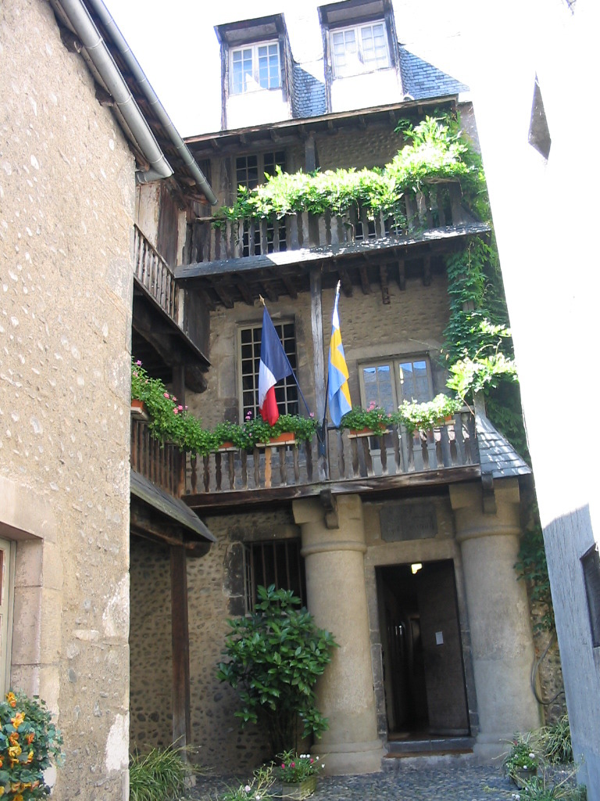
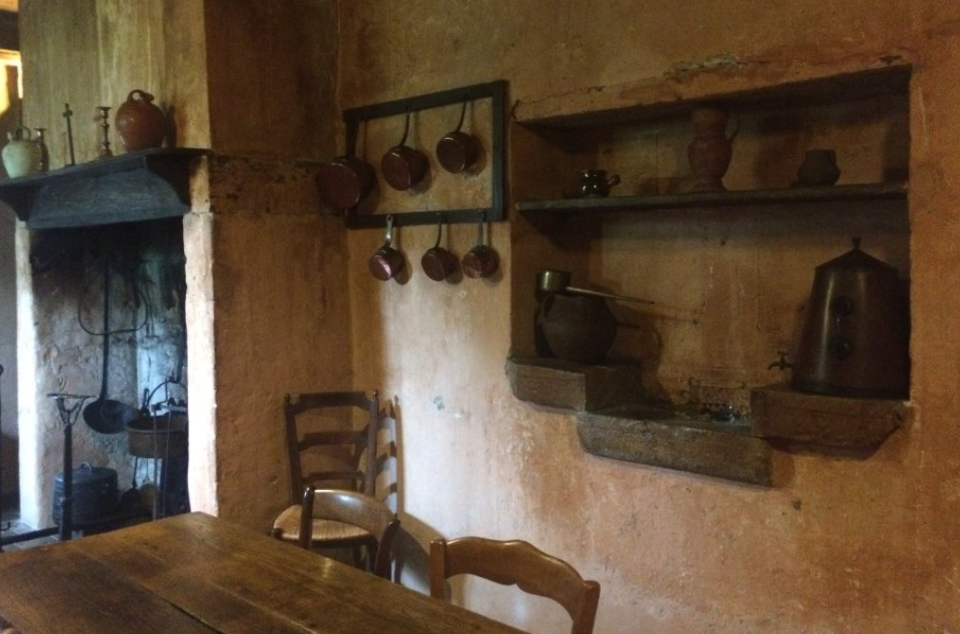
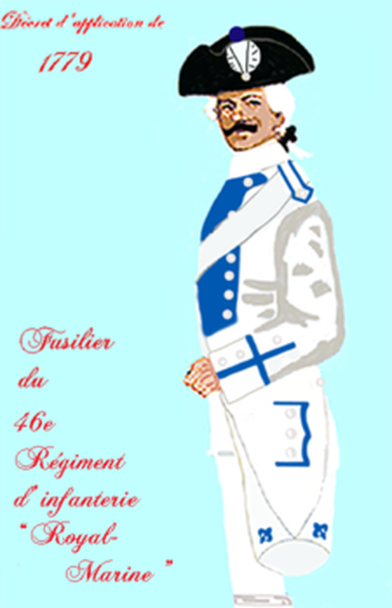
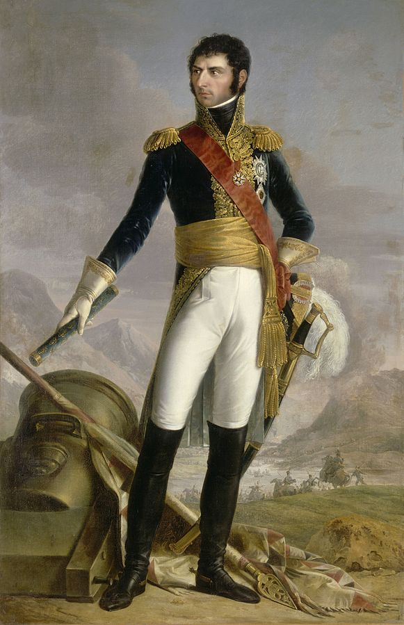
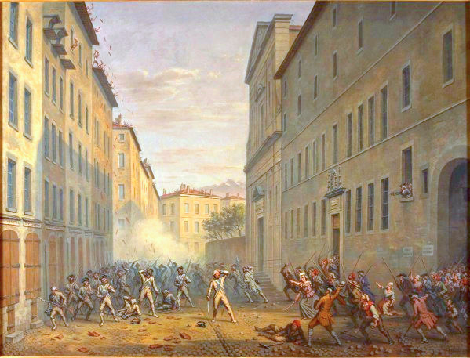
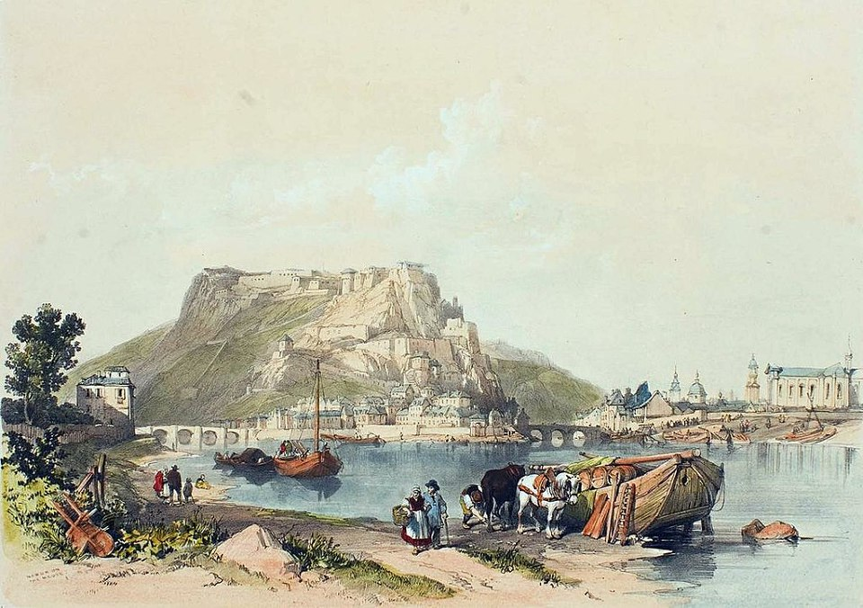

스톡홀름의 프랑스 왕 (3편) - 젊은 베르나도트의 슬픔
게시: 2018-07-09T06:30:00+09:00
여기서 시간과 장소를 다시 혁명 직전의 프랑스로 되돌려 보겠습니다. 1763년, 소위 남자들의 고장이라고 할 수 있는 프랑스 남부 가스코뉴(Gascogne)의 소도시 포(Pau)에서 검사로 일하던 장 알리 베르나도트(Jean Henri Bernadotte)에게 아들이 태어납니다. 당시 52이세이던 베르나도트 검사에게는 아들이 하나 있었는데, 아마 생각지도 않은 늦둥이였을 것입니다. 이 아이에게는 형과 같은 이름인 장(Jean)이라는 이름이 붙여졌는데, 곧 형과 구별하기 위해 장-밥티스트(Jean-Baptiste)라는 이름으로 살짝 바뀌었습니다. 지금도 포 시에는 장-밥티스트 베르나도트가 태어난 집이 거의 그대로 보존되어 있는데, 도심 한복판의 골목 속에 있는 집이라 으리으리한 저택은 당연히 아니었지만 큼직한 기둥과 2개의 박공까지 딸린 중산층의 주택입니다.


(베르나도트의 생가는 지금은 베르나도트 박물관으로 운영되고 있습니다. 입장료 3유로입니다.)
어린 장은 꽤 똘똘한 아이였습니다. 거기다 집안 형편도 안정적이었지요. 그는 아버지의 연줄을 이용하여 14세의 나이에 그 소도시의 검사가 되기 위한 수습 과정에 들어갔습니다. 이때만 해도 그의 인생은 아름다운 가스코뉴의 소도시에서 똑똑하고 근면한 검사로 평온하고 안정적인 것이 될 것이라고 생각했을 것입니다. 그러나 그의 진로에는 애초부터 내재적인 문제가 있었습니다. 그의 디딤돌이 되어줄 아버지의 나이가 너무 많았던 것입니다. 결국 장이 17세 되던 해 3월, 그만 아버지가 69세의 나이로 사망해버립니다. 지금도 그렇지만, 대규모 토지를 소유한 귀족이나 대상인이 아닌 이상 집안의 생계를 책임진 가장의 죽음은 그 집안 경제에 큰 타격을 줄 수 밖에 없었습니다. 지방 소도시 검사라는 직업이 고액 연봉도 아니었거든요. 이렇게 되자 아버지의 연줄로 들어갔던 수습 검사의 자리도 유지할 수가 없게 되었습니다. 당시 가진 것이라고는 건강한 몸과 야망 밖에 없던 젊은이들이 갈 곳은 두 군데 뿐이었습니다. 바다에 나가서 선원이 되거나 군에 입대하는 것이었지요. 그 중에서도 바다보다는 군이 훨씬 더 점잖고 안전한 직업이었고, 3월에 아버지 장례식을 치른 17세의 젊은 베르나도트는 그 해 9월에 왕실 해병 연대(Regiment Royal?La Marine)에 이등병으로 입대합니다. 아마 바다에서 가까운 가스코뉴 지방이라서 그랬나 봅니다.

(1771년~1791년 동안의 왕립 해병연대의 군복입니다. 베르나도트도 이 군복을 입었습니다.)
이렇게 어린 나이에 거친 군에 들어간 베르나도트는 해병대 특성상 얼마 전에 프랑스 땅으로 복속된 코르시카 섬으로 배치되어 거기서 첫 근무를 시작했습니다. 아마 많은 분들께서는 시가지를 순찰하는 베르나도트 이등병에게 몰래 돌을 던졌다가 붙잡혀 얻어맞은 나폴레옹... 등의 이야기를 기대하실지 모르겠습니다만 이때는 그 섬에서 태어난 나폴레옹이 11살이라서 그는 이미 브리엔(Brienne-le-Chateau)에 있는 예비사관학교에 입교해 있을 때였습니다. 점령군 베르나도트 이등병과 프랑스에 대한 반감으로 불타는 열혈 소년 나폴레옹이 멀리서라도 마주칠 일은 없었던 것이지요.
그 이후로도 베르나도트는 브상콩(Besancon), 그르노블(Grenoble), 마르세유(Marseille) 등을 전전하며 군 생활을 계속 했습니다. 당시 부르봉 왕정 하에서의 프랑스군은 채찍질 처벌이 존재하는 등 거친 곳이었고 급여가 많은 곳도 물론 아니었으니, 어린 나이에 군 생활이 쉽지는 않았을 것입니다. 그러나 그는 나름 군 생활을 충실하게 잘 했던 것 같습니다. 하긴 당시 프랑스군 졸병들 중에 글을 능숙하게 읽고 쓸 줄 아는 사람이 그렇게 많지는 않았을 테니, 어리지만 배운 것도 많고 천성적으로 똘똘한 두뇌를 가졌던 베르나도트는 상관들의 눈에 띌 수 밖에 없었을 것입니다. 덕분에 그는 입대 5년 만에 하사(sergeant, 정확하게는 우리나라 병장에 해당)로 승진할 수 있었습니다. 요즘 미군도 그렇지만 당시 모병제였던 프랑스군에서는 병사가 부사관으로 승진하는 것이 그렇게 쉽지는 않았는데, 베르나도트는 그걸 해냈습니다. 사회와 마찬가지로 군대에서도 아는 것 많고 똑똑한 것도 중요했지만, 사실 외모도 꽤 중요합니다. 상관이든 부하든 남에게 호감을 주는 외모가 유리하지요. 또 외모는 타고나는 것 외에도 옷차림이나 청결 측면에서 잘 가꾸는 것이 중요한데, 당시 베르나도트의 별명이 '각선미 하사'(Sergeant Belle-Jambe)였던 것으로 보아, 그는 외모 측면에서도 꽤 신경을 쓰는 스타일이었던 것 같습니다. 그런 점들 때문에 그는 비록 부사관이었지만 승승장구 승진을 거듭 했습니다. 불과 5년 만인 1790년, 그는 27세의 젊은 나이에 특무상사(Adjutant-Major)로 승진하는데, 이는 당시 병으로 승진할 수 있는 최고 지위였습니다.

(그러고보니 베르나도트의 다리가 길고 매끈하게 보이는 것 같기도 한데...)
젊은 시절 베르나도트에 대한 기록은 그리 많지 않습니다. 베르나도트는 현재 프랑스에서는 일종의 기피 인물로서, 그와 연관된 기록 등은 별로 정리 발표된 것이 없거든요. 한번은 지금도 가스코뉴 포에서 베르나도트 박물관을 운영 중인 베르나도트 가문 사람이 파리 시장에게 편지를 써서 '왜 베르나도트의 이름을 딴 거리 이름은 없는가?' 라고 문의를 하자 짧게 '라이프치히(Leipzig, 1813년 베르나도트가 나폴레옹의 적으로 싸운 전투)'라는 답변이 돌아왔다고 할 정도니까요. 덕분에 그가 언제부터 열렬한 공화주의자 자코뱅이 되었는지도 불분명합니다. 아마 한때 쁘띠-부르조아(petit bourgeois, 소시민 중산층)로서 안락한 삶이 예정되어 있다 서민층인 부사관 계급으로 떨어진 뒤, 자신보다 아는 것도 실력도 별로 없으면서 으시대며 군림하는 귀족 출신 장교들을 보며 그런 신분제 사회의 불합리성에 대해 조용히 분노를 키우고 있었을지도 모르지요.
그러나 역설적으로 그런 그가 죽을 뻔한 것은 그가 그르노블에 주둔할 당시 거기서 벌어진 '타일의 날'(Journée des Tuiles) 폭동에서 시민들의 손에 의한 것이었습니다. 이 폭동에서는 3명이 죽고 20여명이 다쳤는데, 그 부상자들 중 하나가 폭동 진압에 동원되었던 해병들 중의 그였습니다. 여기서 부상을 입고 쓰러졌던 그를 살려준 것은 빌라르(Dominique Villars)라는 식물학자 겸 의사였습니다. 나중에 스웨덴의 왕세자가 된 베르나도트는 이 때의 은혜를 갚고자 빌라르를 자신의 어전 의사로 데려가고자 했으나 빌라르가 사양했다고 합니다.

(잘 알려지지 않은 1788년 그르노블의 타일의 날 폭동은 바로 그 다음 해인 프랑스 대혁명의 전조 정도였습니다. 그림 속에서 그르노블 시가지에서 시민들의 공격을 받는 흰 군복의 병사들이 보이는데, 그들이 왕립 해병연대입니다. 베르나도트도 그 중 하나였습니다.)
그가 언제 어떤 과정을 거쳐 장교로 임관되었는지도 그 과정이 불분명한데, 당시 흔히 그랬듯이 아마 그가 속했던 연대도 혁명 진행 과정에서 붕괴되어 버리고 국민 공회에 호응하는 새로운 부대들이 조직될 때 동료 병사들에 의해 장교로 선출된 것이 아닌가 짐작할 뿐입니다. 어린 시절 법률 공부를 하여 장교들 못지 않은 실력을 가진데다 키도 키고 외모도 멋지며, 게다가 정치적으로도 열혈 자코뱅다웠던 베르나도트가 신분제가 폐지된 사회에서 병사들의 지지를 받아 장교로 선출되는 것은 꽤 당연한 일이었을 것입니다. 같은 가스코뉴 출신의 프랑스 원수 장 란도 원래 사병 출신의 제대 병사였다가 1791년 그런 과정을 거쳐 동료 병사들에 의해 장교로 선출된 바 있었지요. 어쩌면 베르나도트의 가슴에 새겨져 있었다는 “Mort aux rois!” (Death to the kings, 왕들에게 죽음을)라는 문신도 이때 즈음 새겼던 것이 아닐까 생각합니다. 베르나도트에게 자코뱅 정신이 아주 활활 불타고 있을 때였지요.
그런 베르나도트는 혁명 초기의 혼란을 타고 진급에 진급을 거듭했습니다. 27세에 특무상사였던 그가 벨기에 쪽에 주둔했던 주르당(Jean-Baptiste Jourdan) 장군의 상브레-므즈(Sambre-et-Meuse) 방면군에서 준장으로 승진한 것이 불과 4년 뒤인 31세였을 때니까요. 같은 해에 관측용 기구가 최초로 작전에 활용된 전투였던 플레뤼스(Fleurus) 전투가 있었고, 이 전투에서 프랑스가 승리를 거두자 그도 사단장, 즉 소장으로 한번 더 승진을 했습니다. 1790년~1794년 사이 그의 활약이 어땠길래 이렇게 고속 승진을 했는지는 역시 잘 알려져 있지 않습니다. 확실한 것은 그는 나폴레옹 같은 군사적 천재는 아닐지 몰라도 매우 유능한 실무 지휘관이었다는 것입니다. 가령 2년 뒤인 1796년 9월 주르당이 카알 대공의 오스트리아군에게 대패를 당할 때, 상브레-므즈 방면군이 전멸당하지 않고 무사히 라인 강을 건너 철수할 수 있었던 것은 베르나도트의 탁월한 지휘 덕분이었습니다.

(프랑스의 벨기에 방면군을 상브레-므즈(Sambre-et-Meuse) 방면군이라고 불렀던 것은 벨기에 한복판에 위치한 이 지역이 상브르 강과 므즈 강이 합류하는 지점이기 때문입니다. 그 중심에 있는 도시가 위 1838년 그림에 묘사된 나뮈르(Namur)입니다. 당연히 두 강이 합쳐지는 곳이므로 산업과 통상이 발달한 곳입니다.)
이런 활약은 총재 정부에서도 주목받았습니다. 비록 상브레-므즈 방면군 참패의 책임을 지고 주르당은 일선에서 물러났으나, 베르나도트는 몇 개월 뒤인 1797년 1월, 무려 2만 명의 지휘관으로 임명되어 새롭게 떠오르던 전선인 이탈리아에 파견되었습니다. 그러나 베르나도트가 이탈리아 방면군 사령관으로 임명된 것은 물론 아니었고, 거기서 연전연승을 이어가던 떠오르는 수퍼스타 사령관에게 보충 병력을 끌고 가는 것에 불과했습니다. 베르나도트는 아마 이 곳에서 자기보다 더 똑똑하고 능력있는 사람을 처음 만났을 것입니다. 젊은 나이에 사단장에 올라 으쓱하던 그보다 무려 6살이나 더 젊은데도 그의 상관으로서 일개 군(armee) 전체를 지휘하던 사람은 물론 다름 아닌 나폴레옹 보나파르트였습니다.
그러나 불행히도 이 둘의 만남은 출발이 전혀 상쾌하지 못 했습니다.
To be continued...
Source : The Life of Napoleon Bonaparte by William M. Sloane
http://histoire.online/index.php/2017/05/05/le-tatouage-de-bernadotte/
https://www.sudouest.fr/2010/08/28/bernadotte-le-roi-republicain-170917-4344.php
https://en.wikipedia.org/wiki/Charles_XIII_of_Sweden
https://en.wikipedia.org/wiki/Charles_XIV_John_of_Sweden
https://www.tripadvisor.co.kr/Attraction_Review-g187087-d6121622-Reviews-Musee_Bernadotte-Pau_Communaute_d_Agglomeration_Pau_Pyrenees_Bearn_Basque_Country.html
https://fr.wikipedia.org/wiki/Dominique_Villars
https://fr.wikipedia.org/wiki/Journ%C3%A9e_des_Tuiles